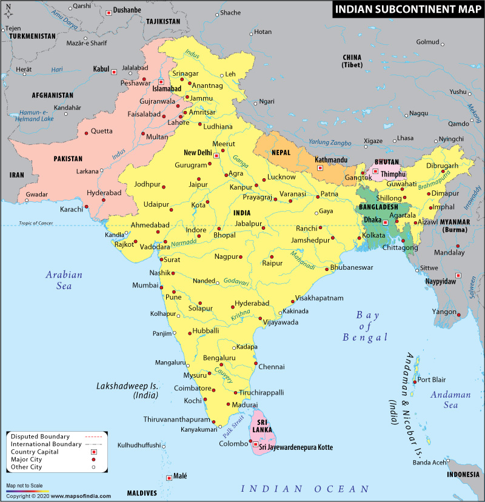

OPENNING THOUGHTS:
When people think of famous buildings, they may think of modern constructions like the Sydney Opera House or the Eiffel Tower; some may even reminisce over historical wonders like the Pantheon and the Colosseum. I noticed that most notable pieces of architecture that come to people's mind are often from the Western world. The East has architectural gems of its own; I wanted to narrow my scope to South Asia and shed light on the intricate buildings that often get overlooked there. This is a website made to appreciate some of the lesser-known architectural sites in the Indian subcontinent.
What is Architecture?
Architecture in literal terms would be the design and construction of buildings. But these artistically curated sites serve one purpose or another - oftentimes, they are places where like-minded individuals come together.
South Asia as a Geographic Region
South Asia, also known as the Indian subcontinent, comprises of 7 countries:
- Bangladesh
- Bhutan
- India
- Maldives
- Nepal
- Pakistan
- Sri Lanka
The Himalayas mostly separate the region off from the rest of Asia. The Arabian Sea and Bay of Bengal are to the south of these countries, allowing many of them to have ports and participate in maritime trade. South Asia has a diverse geography giving it an array of climate ranges and physical features. One of the first river valley civilizations originated here, at the Indus River. This region is also the birthplace of Hinduism (world's oldest religion), Buddhism, and Sikhism; it has been subject to Islamic influence as well.